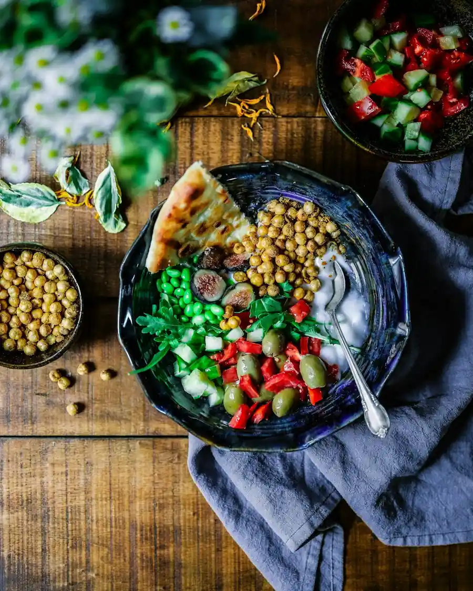
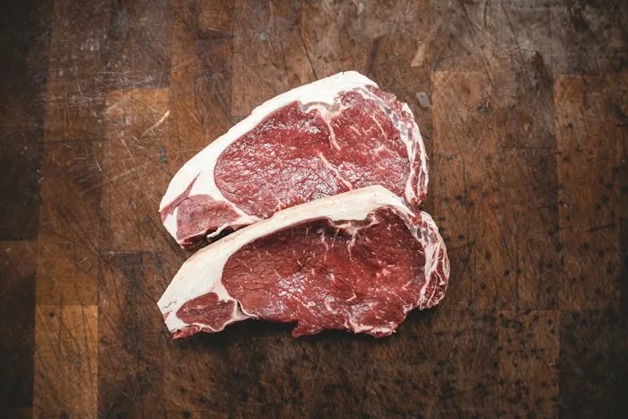
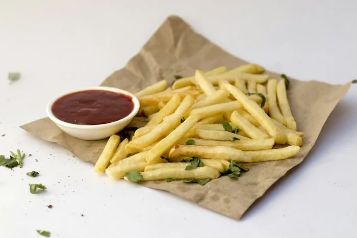
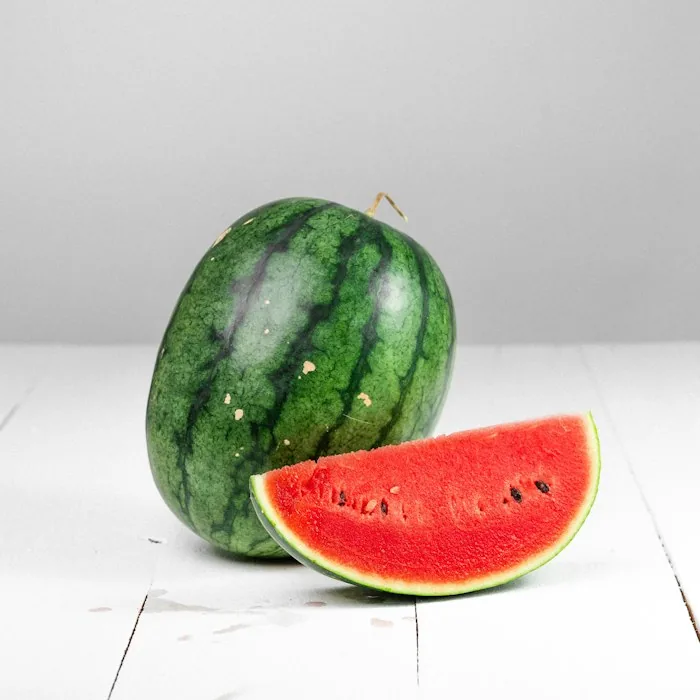
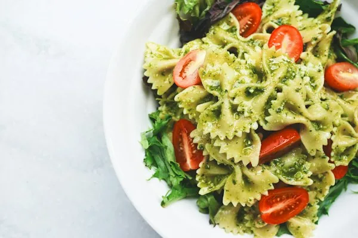
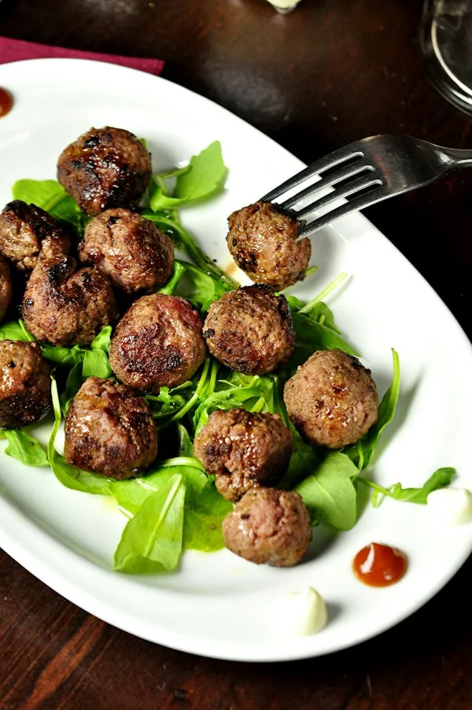
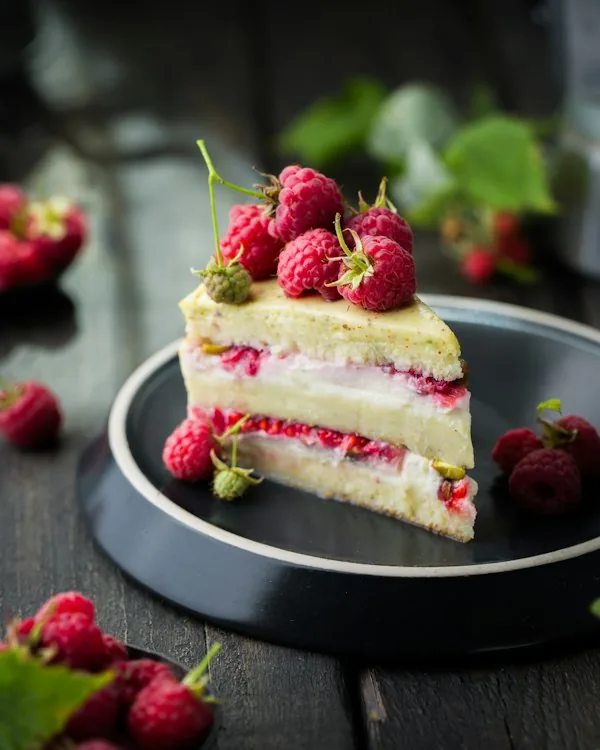
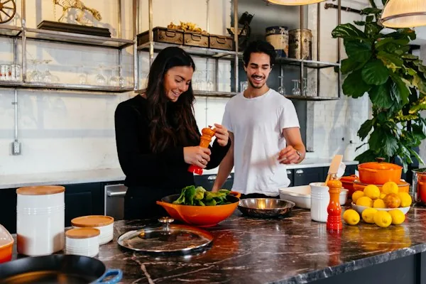
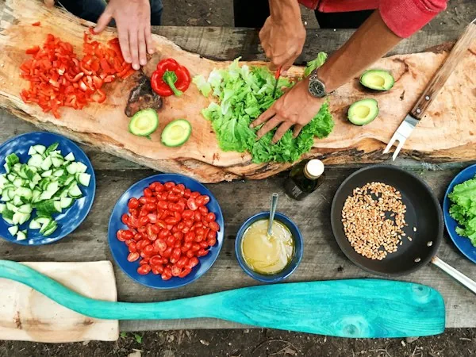
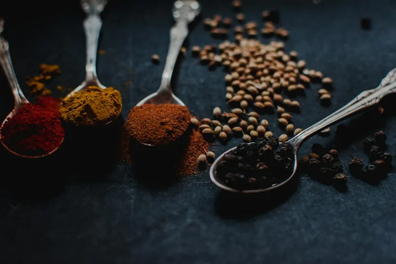

Three years ago, we began blending Italian Tipo 00 flour with organic stoneground Cotswold heritage wheat and feeding our mother levain with Kentish apple skins. The transformation in crust blister, aroma, and lightness surprised even our veteran pizzaiolos.




Whipped egg yolks, roasted garlic confit, smoked paprika, finely diced cornichons, and aged malt vinegar.

How to pre-heat dry cast iron, ball loose 80/20 chuck mince, and press firmly with parchment paper.

Amber caramel whisked with bicarbonate of soda and flaky sea salt—the crown jewel of our shakes.

Chef Elena demonstrates how to stretch 48-hour dough by hand without degassing the rim.

Head Butcher Arthur breaks down how cut selection creates the ultimate juicy burger bite.
Julian shares how we craft zero-proof aperitivo spritzes using English garden herbs.

Throughout October and November, we work with ethical woodland foragers in Wiltshire to bring fresh English autumn truffles directly to our Covent Garden pass—shaved generously over our Wild Mushroom Pizza and folded into our Wagyu Burger aioli.
Taste Our Truffle Specials"Stackly has elevated the humble smash burger and Neapolitan pizza into high culinary theatre without losing an ounce of soul or warmth."
★★★★★ — London Dining Guide"If you only eat one slice in Covent Garden this year, make it Stackly's Burrata & Scotch Bonnet Honey sourdough pizza."
★★★★★ — Critics' Choice"A masterclass in British farm provenance—from Wharfedale Wagyu to Mendip cave cheddar, every ingredient sings."
★★★★★ — Best Casual Dining